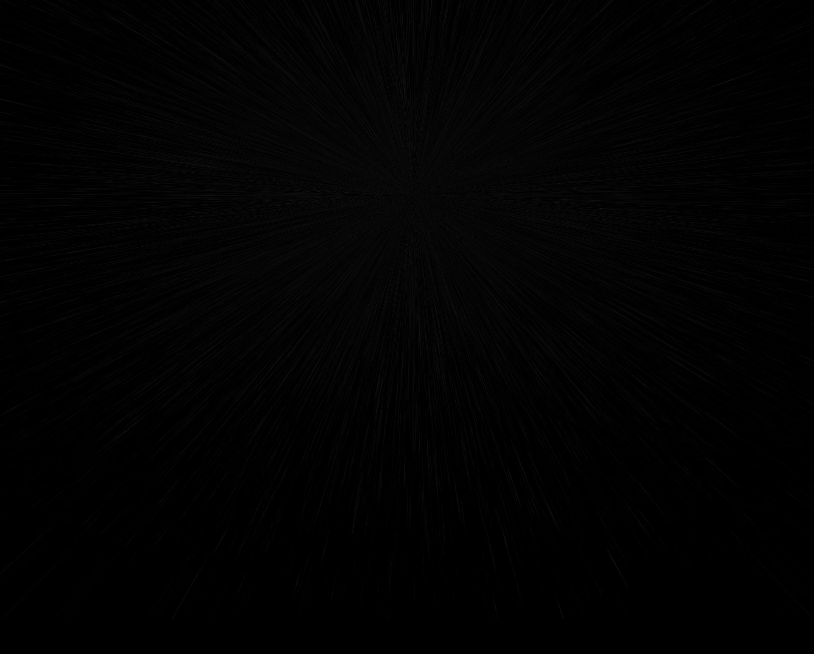

Brahma.Screens
Parallax HD slider
Supports touch screens, works well on tablet.
FF,Safari,Chrome,Opera,IE10+ (IE9 partial support)
One does not simply write the slider!
It is a barren wasteland, riddled with bugs and lags and missed semicolon... but i did it.
